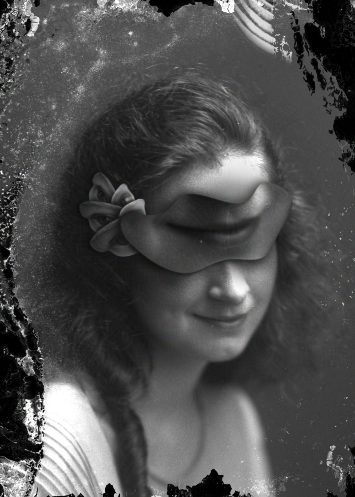
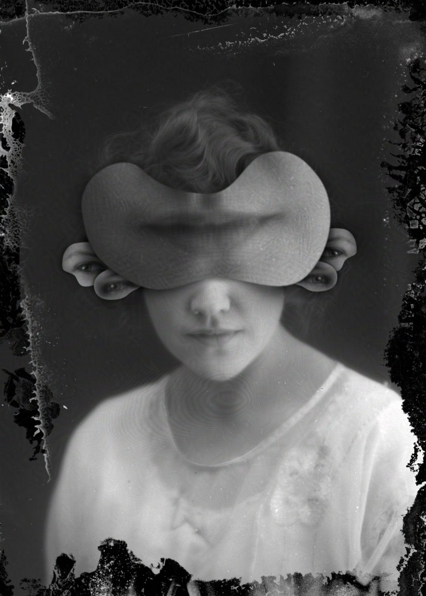
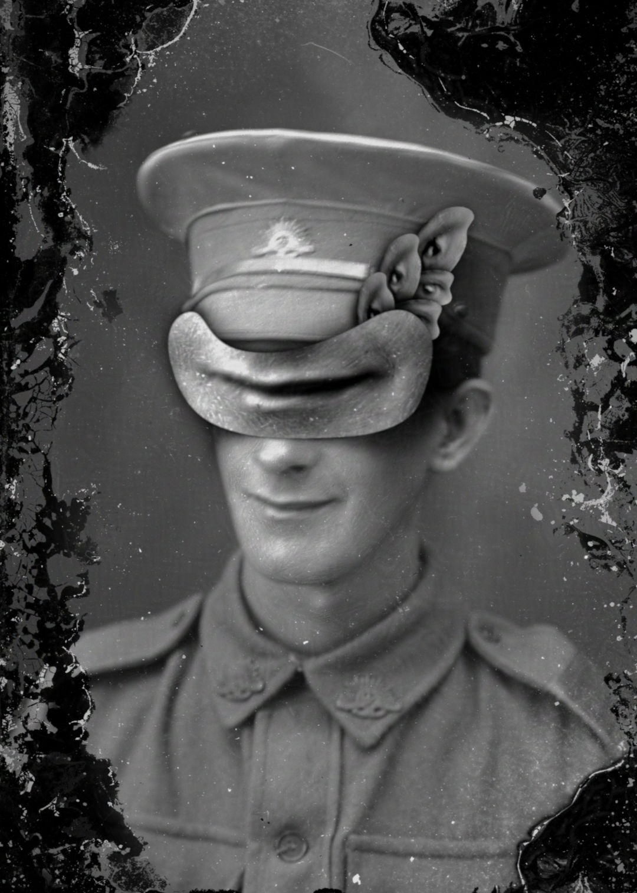
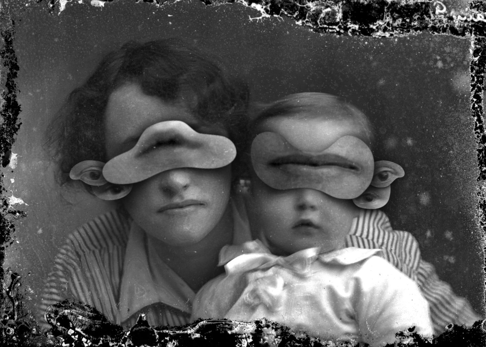
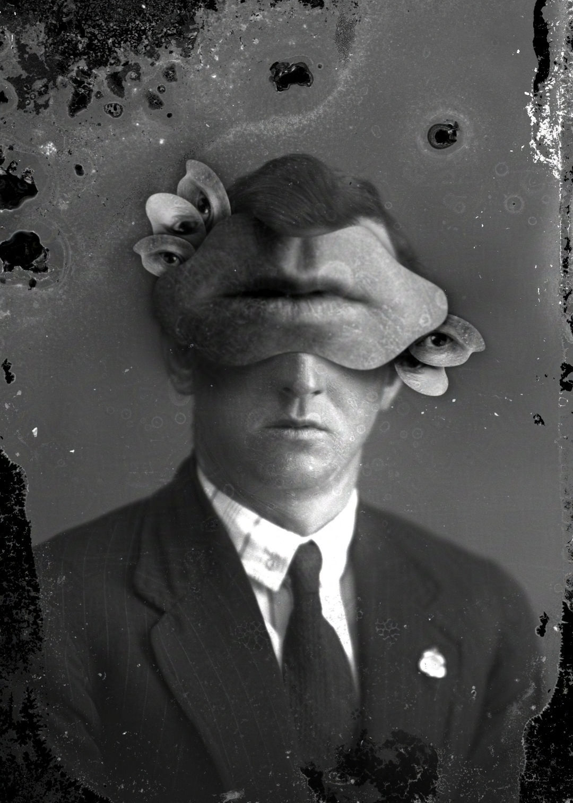

There is a beautiful online collection of public domain images by Alexander Galloway,
originating from the very early 1900s. These images were stored on glass plate negatives for
an unknown length of time before being discovered underneath a house during a renovation.
Many of these high quality images had developed water damage, causing incredible marks and
stains.
Discovering the images without knowing their history I found them striking, and a potent
source of inspiration. I started with a single image and a loose idea of fragmenting the face,
as I had with my Myrioramas. The process was guided by intuition and resulted in the first
(and my favourite) image of the smiling girl. The others all flowed from her.




